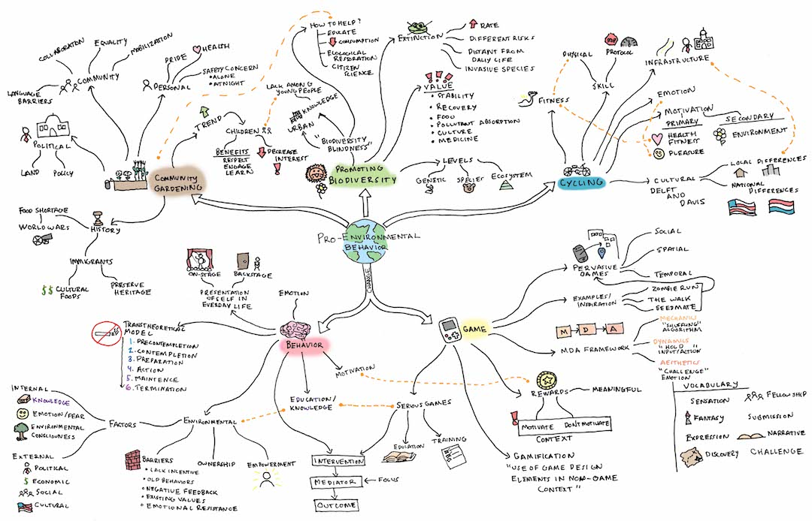

mystery plant
pervasive mobile game concept

Mystery Plant, an 8 week team project focused on pro-environmental behavior & gamification.
Mystery Plant is a unique mobile game that gives novices the chance to adopt gardening and become master gardeners. This game looked to address behavior change focused around engaging players with nature and to promote pro-environmental behavior. It provides everyone the chance to engage directly with nature, build knowledge and skills related to gardening, and provides a platform for local gardening communities to grow.
 Mentored by Jonathan Bergeron of PopCap Games.
Mentored by Jonathan Bergeron of PopCap Games.
team members
3
MHCI+D Students
Brandon Caruso
Kankan Meng
Edward Roberts
tools
Adobe Illustrator
Sketch
Principle
Adobe InDesign
process

1 | Identify Problems
The team brainstormed areas for behavior change. Through several methods, like voting and utilizing the Six Hats approach, the team identify pro-environmental behavior as our general topic.
2 | Understand
The team explored, through secondary research, the areas of behavior change, behavior change related to pro-environmental behavior, game design, and gamification.
3 | Ideate
The team generated ideas for using a game or gamified mobile application to eliminated, adopt, or change behaviors identified in research.
4 | Refine Concept
The team focused on the Mystery Plant idea and created a user flow, concept sketches, and a storyboard to help explain the concept in greater detail.
5 | Prototype
The team created a comprehensive interaction flow to display the refined concept. The interaction flow helped identify key points in the application to wireframe and create high-fidelity interface mock-ups.
identify
Use a mobile game or gamified application to promote behavior change.
When the team received this prompt, a focus was needed. The team identify a problem area in which we could research in depth. This was done through a simple brainstorming session. The team employed many methods, like 2x2 Matrices, the Six Hats approach, and voting, to identify and focus on areas for behavior change using the behaviors generated from the brainstorm.
understand


With little to no understanding of behavior change, pro-environmental behavior models, and game design, the team began performing secondary research on these areas. The findings from this exploration would inform decisions that were made throughout the project. The team found that community gardening and gardening, in general, would be the best area to explore. Specific gardening behaviors were sorted into three groups, behaviors that could be changed, adopted, or eliminated. The behaviors were then mapped in relation to potential appeal to young adults 18-34 in urban centers using an opportunity map.
ideate
With the three behaviors of making friends, learning about plants, and eating organic food in mind, the team started ideation. The team performed a series of timed ideation sessions, between which the team discussed and shared their ideas.


concepts


With all the ideas from our ideation session gathered, the team organized them using 2x2 Matrices to narrow down to three concepts. Some of the ideas were combined due to similarity or because the ideas complemented each other and made a more intriguing concept.
Mystery Plant
Players are asked to be plant detectives. They receive a mystery plant in the mail which they have to grow and identify to get new plants for their garden.
Created by Brandon Caruso.
Hybrid Plants
Players need to explore nature in reality, identify and collect plants (including invasive species), acquire knowledge about their characteristics and create hybrid plants to survive the extraterrestrial planets’ environment.
Created by Kankan Meng.

Plant of the Past
Players explore their city and learn about plant species that used to be in different locations. They learn about native plant species and also how humans impact the environment around them.
Created by Edward Roberts.
one concept
Converging to one concept can be a difficult task if no structure is given to the decision. Referring back to our research, the team decided to use the barriers identified for adopting pro-environmental behavior change as the judging criteria for each of the concepts. For each barrier the team rated the concepts on whether they overcame the barrier, addressed the barrier or did not address the barrier. The concept that had the highest rating was selected.
refine
With Mystery Plant selected as the concept to pursue for the rest of the project, the team began to better define the concept. Using multiple methods, we expanded the idea to better address our behavior change goals.
storyboard
Story developed by Team. Drawn by Kankan Meng.
user flow
This was a tool that became invaluable to the project. It was a structured way to communicate the flow of the experience. The insights that came from using this as a communication tool generated not only internal understanding, but many outside mentors referenced this as way to articulate feedback.

detailed refinement
With the initial user flow, sketches, and storyboard, the team looked for feedback on Mystery Plant. Taking that feedback and examining the concept more, the team started refining the solution.
error analysis
The team began the refinement of Mystery Plant by performing an error analysis. The initial storyboard and user flow were used to identify where the pain points were in the concept, what we needed to be removed, and what we needed to address as we moved into generating wireframes and interface mock-ups for the project.

interaction flow
Taking into consideration the feedback we received, the team refined the user flow and used it to inform a more robust interaction flow. This flow removed the need for a distracting point collection mini-game and incorporated a much need community aspect to the game.
Diagrammed by Edward Roberts.
prototype
The team produced a robust interaction flow, a collection of wireframes, high fidelity interface mock-ups and crafted animated demos to bring Mystery Plant from an initial concept into an initial prototype.
wireframe
Created by Team. Finalized by Kankan Meng.
Using the interaction flow, the team selected states to generate wireframes. The elements between different screens were linked to indicate the flow from one screen to the other. The wireframes became important blueprints used in the development of the high fidelity interfaces.
high fidelity mockups


The look and feel of the application went through several iterations. The visual design needed to accompany and support the growing of plants in real life and in no way attempting to monopolize the attention of the player. Designing these interfaces was a personal endeavor and, as in many portions of the project, was a learning opportunity.
plant
Players select plants to grow to complete gardens. To help players track their mystery plants the game allows them to view tracking information and progress to generate excitement and anticipation of receiving a package.
grow
This is the core of the game, where players are given simple instructions on how to care for the plants. Their plant journal is a scrollable feed which allows them to see progress and reference past instructions or hints to help with identification.
community
Community is a powerful tool to help assist with behavior change. Allowing friends to play together, not only helps both players explore garden themes faster, but also starts a conversation outside the game. Players can seek help with gardening questions or just get in contact with fellow local gardeners in the Community section of the game.
Video Demos by Kankan Meng & Brandon Caruso.